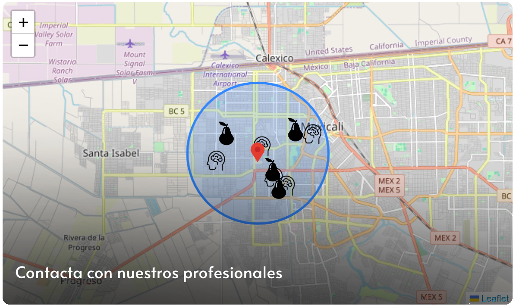

Ensalada de Quinoa
¡Preparando deliciosas recetas para ti!
Querido equipo, ¡Qué emoción y honor es para nosotros haber llegado a la Fase Nacional de Infomatrix 2024! Nos llena de orgullo haber alcanzado este logro gracias a nuestro arduo trabajo, dedicación y pasión por la tecnología y la innovación. Queremos expresar nuestro más profundo agradecimiento a todos y cada uno de ustedes por su arduo trabajo, creatividad y compromiso para hacer posible este increíble viaje. Sin su esfuerzo y determinación, este logro no sería posible. Esperamos con entusiasmo representar a nuestro equipo y a nuestra institución en la emocionante competencia que se llevará a cabo en Guadalajara, en la UVM Sur. Será una experiencia inolvidable llena de aprendizaje, colaboración y camaradería. Una vez más, gracias por su apoyo inquebrantable y por creer en nuestro potencial. Estamos listos para dar lo mejor de nosotros y dejar en alto el nombre de nuestro equipo. ¡Nos vemos en Guadalajara! Con gratitud, FoodMood.
Ensalada de Quinoa

Pollo al Horno con Verduras

Sopa de Lentejas

Tacos de Pescado

Ensalada de Frutas
Depresión, pandemia y alimentación
4 ALIMENTOS 🧠 para tu SALUD MENTAL y CEREBRO
Depresión y comida chatarra: ¿la conexión revelada?
4 comidas que impactan en tu estado anímico
🧠CÓMO tu SALUD MENTAL AFECTA a TU VIDA

¿Como la salud mental afecta en nuestra vida cotidiana?

La música: un elixir para el alma

La naturaleza: un refugio para el bienestar
:format(jpg)/f.elconfidencial.com%2Foriginal%2Fe71%2F7a2%2Fc78%2Fe717a2c781c766d78091be61a4f9aca1.jpg)
El ejercicio: una medicina para el cuerpo y la mente

El sueño: un viaje reparador para la mente
¡Con un par de clicks puedes cambiar tu vida!



La salud mental desempeña un papel crucial en nuestra vida cotidiana. Afecta nuestra capacidad para manejar el estrés, tomar decisiones, relacionarnos con los demás y enfrentar los desafíos de la vida. Es importante cuidar nuestra salud mental practicando el autocuidado, buscando apoyo cuando sea necesario y adoptando hábitos que promuevan el bienestar emocional.

Hábitos saludables: Dormir lo suficiente, comer una dieta equilibrada y hacer ejercicio regularmente son esenciales para la salud mental.
Manejo del estrés: Encuentra técnicas para manejar el estrés como la meditación, el yoga o la respiración profunda.
Actividades placenteras: Dedica tiempo a actividades que disfrutes como leer, escuchar música o pasar tiempo con seres queridos.
Habla con alguien de confianza: Un amigo, familiar, terapeuta o consejero puede ayudarte a procesar emociones difíciles y obtener apoyo.
Grupos de apoyo: Unirse a un grupo de apoyo te permite conectar con personas que están pasando por experiencias similares.
Líneas de ayuda: Hay líneas de ayuda disponibles para personas que necesitan apoyo inmediato en situaciones difíciles.
Practicar la gratitud: Enfócate en las cosas buenas de tu vida y expresa gratitud por ellas.
Pensamiento positivo: Desarrolla una perspectiva positiva y desafía los pensamientos negativos.
Conectar con la naturaleza: Pasar tiempo al aire libre puede mejorar el estado de ánimo y reducir el estrés.
Aprender a decir no: Es importante establecer límites y cuidar tu propio bienestar.
Desde tiempos inmemoriales, la música ha acompañado a la humanidad en sus momentos más importantes. Ha servido como vehículo de expresión, celebración, ritual y, sin duda, como fuente de bienestar. En este artículo, exploraremos cómo la música puede mejorar nuestra salud mental, revelando sus mecanismos de acción, beneficios comprobados y recomendaciones prácticas para incorporarla en la vida diaria.

Reduce el estrés: La música tiene la capacidad de disminuir el cortisol, la hormona del estrés, y aumentar la producción de endorfinas, las hormonas del placer. Esto se traduce en una sensación de calma, bienestar y disminución de la tensión.
Mejora el estado de ánimo: Los sonidos y melodías agradables estimulan la liberación de dopamina, un neurotransmisor relacionado con la recompensa y el placer. Esto genera una sensación de felicidad, optimismo y entusiasmo.
Aumenta la creatividad: La música puede estimular la actividad cerebral en áreas relacionadas con la creatividad, la imaginación y la resolución de problemas. Esto puede ser útil para el trabajo, el estudio o cualquier actividad que requiera pensamiento creativo.
Mejora la memoria y el aprendizaje: La música puede mejorar la memoria a corto y largo plazo, así como la capacidad de aprendizaje. Esto se debe a que la música ayuda a crear conexiones neuronales más fuertes en el cerebro.
Fortalece el sistema inmunológico: El efecto calmante y reductor del estrés de la música puede tener un impacto positivo en el sistema inmunológico, haciéndonos más resistentes a las enfermedades.
En un mundo cada vez más urbanizado y artificial, la naturaleza emerge como un oasis de bienestar para el cuerpo y la mente. Desde el canto de las aves hasta el susurro del viento entre las hojas, la naturaleza nos ofrece una experiencia sensorial única que puede mejorar significativamente nuestra salud mental.

Reduce el estrés: El contacto con la naturaleza tiene un efecto calmante y restaurador sobre el sistema nervioso, disminuyendo el cortisol, la hormona del estrés. Esto se traduce en una sensación de paz interior, tranquilidad y reducción de la ansiedad.
Mejora el estado de ánimo: La naturaleza tiene la capacidad de aumentar los niveles de serotonina y dopamina, neurotransmisores asociados con la felicidad, el placer y la motivación. Esto genera una sensación de bienestar, optimismo y vitalidad.
Aumenta la concentración y la creatividad: La naturaleza puede mejorar la atención y la concentración, así como la capacidad de pensar de forma creativa y resolver problemas. Esto se debe a que la naturaleza proporciona un ambiente tranquilo y estimulante que facilita la concentración y la fluidez mental.
Mejora la memoria y el aprendizaje: La música puede mejorar la memoria a corto y largo plazo, así como la capacidad de aprendizaje. Esto se debe a que la música ayuda a crear conexiones neuronales más fuertes en el cerebro.
Fortalece el sistema inmunológico: El contacto con la naturaleza puede fortalecer el sistema inmunológico al aumentar la producción de células NK (natural killer), que son responsables de combatir las infecciones.
Mejora el sueño: Pasar tiempo en la naturaleza puede mejorar la calidad del sueño al regular el ritmo circadiano y reducir el insomnio. Esto se debe a que la luz natural y el aire fresco ayudan a sincronizar el reloj biológico del cuerpo.
Reduce la inflamación: La naturaleza tiene un efecto antiinflamatorio, lo que puede reducir el riesgo de enfermedades crónicas como la diabetes, la artritis y las enfermedades cardíacas.
El ejercicio físico no solo es importante para la salud física, sino que también juega un papel fundamental en el bienestar mental. Desde una caminata rápida hasta una sesión de yoga intensa, la actividad física puede ser una poderosa herramienta para mejorar nuestro estado de ánimo, reducir el estrés y aumentar la autoestima.
.jpg)
Reduce el estrés: El ejercicio libera endorfinas, las hormonas del placer, que tienen un efecto calmante y restaurador sobre el sistema nervioso. Esto se traduce en una sensación de bienestar, tranquilidad y reducción de la ansiedad.
Mejora el estado de ánimo: El ejercicio aumenta los niveles de serotonina y dopamina, neurotransmisores asociados con la felicidad, el placer y la motivación. Esto genera una sensación de optimismo, vitalidad y energía.
Aumenta la autoestima: El ejercicio regular puede aumentar la autoestima y la confianza en uno mismo al mejorar la imagen corporal y la sensación de logro.
Mejora la memoria y el aprendizaje: El ejercicio puede mejorar la memoria a corto y largo plazo, así como la capacidad de aprendizaje. Esto se debe a que el ejercicio aumenta el flujo sanguíneo al cerebro y promueve la neurogénesis, la creación de nuevas neuronas.
Reduce el riesgo de enfermedades mentales: El ejercicio regular puede reducir el riesgo de sufrir depresión, ansiedad y otros problemas de salud mental.
El sueño: un viaje reparador para la mente.

Mejora el estado de ánimo: Dormir lo suficiente ayuda a regular las emociones y reduce la irritabilidad, la ansiedad y la depresión.
Aumenta la concentración y la memoria: El sueño es esencial para la consolidación de la memoria y el aprendizaje. Dormir bien nos ayuda a concentrarnos mejor, recordar información y tomar decisiones más acertadas.
Fortalece el sistema inmunológico: El sueño ayuda a fortalecer el sistema inmunológico y a combatir las infecciones.
Reduce el riesgo de enfermedades: La falta de sueño se ha asociado con un mayor riesgo de sufrir enfermedades crónicas como la diabetes, la obesidad, las enfermedades cardíacas y la depresión.